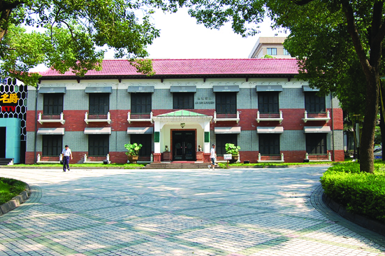

嘉兴市文物保护网 · 市级文物保护单位 · 2014-06-19 · 原文

嘉兴宾馆小洋房位于嘉兴市南湖区建设街道百福弄社区中山路嘉兴宾馆内，俗称“嘉宾花园”，建于20世纪50年代。曾接待董必武、林彪等来禾居住，之后又做过市政府、外事办办公室，现已改作餐厅。小洋房坐北朝南，砖木结构，系二层七开间楼房，占地面积315平方米，通面阔30米，通进深10.5米。四面均开有方形门窗，檐高10.5米，檐下有一圈象征和平的白鸽石膏雕塑。屋顶为悬山顶，顶铺设红色洋瓦，墙体用青砖砌筑。内部已重新装修。嘉兴宾馆小洋房是典型的中西合璧式建筑，建国后曾居住重要历史人物，并作为嘉兴重要机构的办公场所，对于研究嘉兴的近现代历史、文化和建筑都有较高的历史、科学和艺术价值。2010年公布为嘉兴市级文物保护单位。